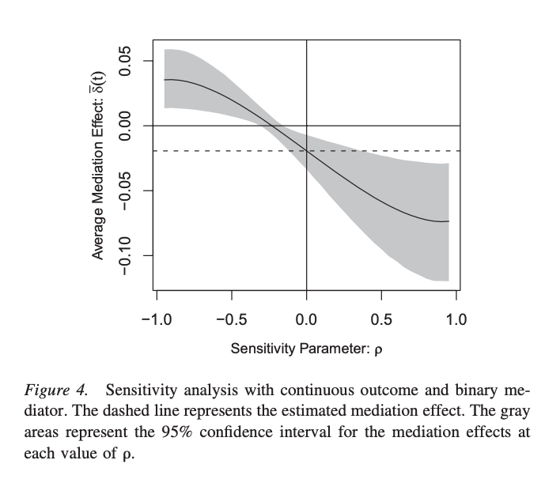

Some background
My Ph.D. thesis contained some attempts to “do causal inference” with Bayesian modeling. It was interesting stuff, but the experience was disorienting. At the time, my field (political science) had very few cases where somebody did causal estimation with a Bayesian model. It had even fewer examples of anybody discussing “what it meant” to combine these things, if it meant anything at all.
I had neither the brains nor the self-sacrificial dedication to launch an academic career with this work. But I was writing a dissertation, and you try to push on a few things in a dissertation. Causal inference and Bayesian modeling are both big things that occupy a lot of brain space as you try to grok them. So I was kicking some ideas around.
This post will summarize some of those ideas from the dissertation. I have repeatedly tried and failed to write it.
The basic outline
I will make two broad points
- You don’t have to be a Bayesian, but it makes sense to at least legalize Bayesian modeling for ordinary causal inference applications.
- If you apply a Bayesian lens to the project of causal inference, you see interesting theoretical ideas that have been under-explored.
We will talk about the first point briefly and spend more time on the second.1
1. Legalize it
Causal inference in social science, like most quantitative work in social science, doesn’t provide much space for “everyday” Bayesian estimation. A common mindset seems to be,
If the priors don’t change much, don’t bother me with them. If the priors change things a lot, it must be black magic, so don’t bother me with them.
Bayesian modeling in political science is is tolerated in roughly two cases. First, whenever a model is just too difficult to estimate without MCMC or structured parameters. And second, in the world of measurement modeling,2 where the typical political scientist doesn’t know what the heck is happening anyway, so they don’t care if the model is Bayesian. So Bayes is sometimes allowed, but in remarkable situations.
This was a little annoying to me. I wanted to use Bayesian models for unremarkable situations, too, because Bayesian modeling has several benefits even when the situation is unremarkable:
- Priors can structure a parameter space to downweight or simply disallow unreasonable parameters.
- Regularization is usually good, and priors give you that.
- Priors are often a more intuitive interface for regularization than penalty terms in a loss function.3
- Posterior samples make it dead-simple to describe uncertainty in any post-estimation quantity you wish.4
I do not believe that Bayesian modeling is the only way to truth and light. What I believe is that if you combine noisy data with credulous, unpenalized models, then what you get is overfit estimates and unreliable inferences, Bayesian or otherwise. A Bayesian model is a pragmatic tool for structuring what inferences you are likely to draw from finite data. I am making a pragmatic argument, not a religious one.
I will say it a different way. Many observational causal models require good estimates of nuisance terms such as propensity scores, covariate adjustments, pre-trends, and the list goes on. Many of these nuisance terms require you to make more and more statistical adjustments without growing your data. Why, oh why, should you make these adjustments by just throwing everything into the OLS machine and trusting whatever you get out of it? This is one area where machine learnists have something to offer: better predictions by disciplining model complexity with regularization. Maybe what I should be saying is that regularization should be legalized in political science.
2. The “pillars” of causal inference and their Bayesian interpretation
This is the real meat. I will make the argument that causal inference is distinct from “plain” statistical estimation in a few key ways. For shorthand, I will refer to these as “pillars” of causal inference. I will introduce these pillars, then I will discuss how taking a Bayesian view leads us to reinterpret these pillars in ways that, if we follow where they lead us, would teach us a lot of about causal inference and quantitative empiricism broadly.
Pillar A: the causal model
Let’s call a “causal model” the omniscient view of a causal system from mathematical first principles. The dominant way to do this in social science is the “potential outcomes” model attributed chiefly to Don Rubin. You can denote an outcome variable \(Y\) that is affected by some causal variable \(A\), which we will say is a binary-valued treatment for now. For an individual unit \(i\), if \(A_{i}\) were \(0\) or \(1\), we would denote \(i\)’s potential outcomes as \(Y_{i}(A_{i} = 1)\) or \(Y_{i}(A_{i} = 0)\), the outcome value they would realize if they were treated (1) or not (0). If we could somehow observe both of these potential outcomes, we could say that one way to measure the “effect” of \(A\) on unit \(i\) is to take the difference \(Y_{i}(A_{i} = 1) - Y_{i}(A_{i} = 0)\) and call this term the individual treatment effect \(\tau_{i}\).
This is the simplest causal model we could think of. The researcher could define other types of effects that would be defined in different ways. This is how we get “conditional” treatment effects, “local” treatment effects, and so on.
Pillar B: causal identificiation
The causal model from Pillar A is a perfectly omniscient description of the causal system, but it is only a hypothetical device. Of course, we can only ever observe unit \(i\) receive a single value of \(A\), so \(\tau_{i}\) cannot be measured. What we can do instead is layer on additional assumptions that let us say something about the outcomes we can’t observe, given the outcomes we can observe. These are called identification assumptions.
Think of it in terms of data in groups. I don’t observe unit \(i\) in both \(A=1\) and \(A=0\), but I can observe a group of \(A=1\) units and a group of \(A=0\) units. Identifications assumptions are the requirements to make inferences about expected individual differences, \(E[{\tau}_{i}] = E[Y_{i}(A=1) - Y_{i}(A=0)]\), which we can’t observe, based on differences of group expectations, \(\bar{\tau} = E[Y_{i}(A= 1)] - E[Y_{i}(A=0)]\) which we can observe. With these assumptions in hand, we could refer to the unobservable treatment effect \(E[\tau_{i}]\) as a causal estimand.
Remember, causal estimands are still entities in the causal model. They are not quantities that we can observe. They are quantities that we seek to estimate with data, whose validity is only subject to assumptions that we make with pinpoint precision.
Pillar C: statistical estimation
Identification assumptions usually describe minimally sufficient conditions for nonparametric estimators of causal estimands. I say “nonparametric” because these estimators are usually differences in group means for \(A=1\) and \(A=0\); we don’t need to know the distribution of the individual unit outcomes \(Y_{i}\) around those means to estimate this average group difference.
This is the launching off point for cauasal estimation approaches that you see in social sciences. They are mostly based on OLS, because OLS is often the closest thing we can do to calculating simple mean differences at scale. OLS will also be our first enemy when we Go Full Bayesian.
Pillar C, now Bayesian: Bayesian estimation
We have to take these pillars out of order in order to introduce the Bayesian stuff gradually.
In statistics, there are many ways to estimate means and conditional means. Causal inference practitioners try to minimize their assumptions, so they typically stick to the basics. If they have to estimate means in groups, they typically split the data into groups and calculate the arithmetic mean.
This is an easy place for Bayesian models to appear. We don’t need any new ideology to do this, I will assert. We only need to stick to basic statistical realities: no estimate of any estimand is exact. You can estimate those group differences in more ways than the OLS-equivalent ones. And I would argue that if statistical efficiency and overfitting are concerns to you, you should be free to use non-OLS approaches. These need not even be Bayesian, but of course, you can interpret many penalized estimation approaches and machine learning methods as ways to encode certain, specific priors.
This “mere estimation” pillar is mostly where Bayesian models have appeared in political and social science so far: Ratkovic and Tingley’s Lasso Plus, Ornstein and Duck-Mayr using Gaussian Processes for regression discontinuity, Green and Kern using Bayesian regression trees for heterogeneous treatment effects, and Horiuchi, Imai, and Taniguchi modeling noncompliance and nonresponse using a full probability model.5 In economics, Rachael Meager’s hierarchical meta-analyses of experimental results is a bit more substantively Bayesian, because modeling like this requires an explicit, substantive prior that relates individual experiments to the generalized treatment effect.
Bayesian Pillar A: Priors on potential outcomes
Don Rubin himself has been writing about the Bayesian interpretation of his own potential outcomes model since the 1970s, lest you think the Bayesian interpretation is some kind of mis-fit.6 Under this model, potential outcomes, treatment status, covariates, and the treatment effects are all random variables in the same probability model. When we construct a model such as this, and condition it on the data, a few things fall out.
- You get a posterior distribution for the treatment effect. This lets you say that the treatment effect is “probably” within some region with a valid intra-model meaning of “probably”. This is much more interesting than rejecting a null hypothesis that isn’t believable in the first place.
- It implies a direct missing data model for unobserved potential outcomes. You can generate posterior samples of counterfactual data and model the distribution of individual treatment effects. They are still not observable, and the routine is subject to distributional assumptions (it is Bayesian after all), but this is the juice that you can squeeze out.7
- The Bayesian model becomes a missing data model for unobserved counterfactuals. Posterior distributions over potential outcomes, which imply prior distributions over potential outcomes.
This last point is a departure from the “pinpoint” potential outcomes model introduced above. In that model, we have potential \(Y_{i}\) values for \(A \in (0, 1)\) but that’s it. In the Bayesian model, these outcomes are implicitly weighted by the priors of all other parameters in the model. Before you observe any data, you could turn the crank on your model, generate prior samples for all potential outcomes, and immediately eyeball if they match the intuitions that you have about your data as a researcher. Normal Bayesian stuff that you can always do, now in the domain of causal modeling!
One political science example where authors go full-speed into Bayesian counterfactual simulation is Pang, Liu, and Xu (2021).
Bayesian Pillar B: fuzzy identification assumptions
In the typical causal model, you make an identification assumption, and that’s that. In the real world, these assumptions are probably wrong, but we might have some idea of how wrong they might be. Which is to say, if you can conceive of a parameter that represents how your treatment effect estimate is contaminated by a violated assumption, and you have a reasonable beliefs about the plausible values that this parameter could take, then you can average your causal estimates over a reasonable prior for that parameter.
We have seen this in non-Bayesian causal inference already under the name “sensitivity analysis”. For example, this Imai, Keele, and Tingley paper about causal mediation introduces a sensitivity parameter that represents some unmodeled confounding, so that you can entertain how it affects your causal estimates.

The Bayesian view wants the same thing. But if we don’t specify a prior on \(\rho\), then we can’t measure how it affects the plausibility of our treatment effect estimates. The Bayesian approach gives you the technology to get you there.
We can see a germ of this idea in political science, in the third paper of Thomas Leavitt’s dissertation from 2021. This paper builds up a notion of design uncertainty in a difference-in-differences framework that implies a prior distribution over pre-trends, of which parallel trends is only a special case. We then see how treatment effect estimates are affected by different methods for specifying these pre-trend priors. Yeah! This is cool stuff! But it makes you think also: how many papers have we read where we condition on ideal assumptions and then march happily on our way?
This idea of priors for identification assumptions is, in some ways, a mirror image to the click-baity idea from Gerber, Green, and Kaplan’s Illusion of Learning from Observational Research. They say that every estimated treatment effect is the combination of a true effect, bias from the research design, and some statistical uncertainty. Experimental methods shrink your prior about the bias term, allowing you to update your prior about the size of the true effect when you encounter the estimated effect. When you use observational methods, your priors about the bias are vaguer, and
If one is entirely uncertain about the biases of observational research, the accumulation of observational findings sheds no light on the causal parameter of interest.
I hope it is obvious to you, intelligent reader, that a scenario where you are entirely uncertain about the bias is unrealistic and contrived. I could just as easily make a cynical argument that
- There is a continuous distribution of possible violations to your identification assumptions.
- under this continuous distribution, the probability mass where your assumptions hold perfectly is 0.
- therefore when you conduct any experiment, your study teaches you about only 0% of possible realities.
That argument is symbolically correct in the same way that the “illusion of learning” is correct. You can think about it for half-a-second, realize that it’s more like a nudge in a certain direction than a factual statement about what we actually learn from research, and move on with your life.
Conclusion
I hope I have convinced you that there is plenty of work to do here. I won’t be the one to do it. I will be off in the private sector not worrying about this anymore. But I’m glad it is off my chest.
Footnotes
My dissertation also talks about some pragmatic advice for thinking about priors in causal situations and some examples where I replicated causal studies with informative priors. I am skipping that for now. Maybe we will return to that stuff in a future blog post.↩︎
For example, Bayesian item-response models are a common tool for estimating left–right political ideology as a latent variable.↩︎
I know what a prior standard deviation is. How would you interpret a ridge parameter except in terms of prior standard deviation?↩︎
The
CLARIFYpaper by Tomz, Wittenberg, and King has been cited thousands of times, which proves the point.↩︎We first saw Bayesian methods used for this sort of thing in the 70s! By no one other than Don Rubin himself.↩︎
In 2005 Rubin wrote in the context of causal inference that “a posterior distribution with clearly stated prior distributions is the most natural way to summarize evidence for a scientific question. Combining this summary with the costs of decisions then also becomes natural”. Rubin says “ABIYLFOYP”.↩︎
I will go out on a limb and offer a benign view of distributional assumptions. So-called “nonparametric” mean-difference causal estimates are the same thing you get if you minimize certain loss functions that correspond to well-known probability distributions. The sample mean is a quadratic loss minimizer, which is the same thing as a Gaussian likelihood, so, a thin-tailed model. Make all the nonparametric gestures that you want; you are still using an estimator that is jerked around by noisy data.↩︎